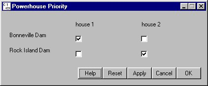

Powerhouse Priority opens a window for setting which powerhouse is designated the primary powerhouse. There are two dams that require a primary powerhouse to be set: Bonneville Dam and Rock Island Dam.
Powerhouse Priority opens a window for setting which powerhouse is designated the primary powerhouse. There are two dams that require a primary powerhouse to be set: Bonneville Dam and Rock Island Dam.
Selecting DamPowerhouse Priority opens a window for setting which powerhouse is designated the primary powerhouse. There are two dams that require a primary powerhouse to be set: Bonneville Dam and Rock Island Dam.

Powerhouse Priority window